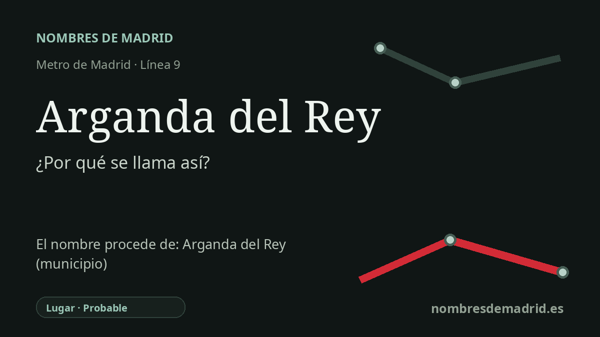

Publicado el · Investigación de Nombres de Madrid · Cómo verificamos cada origen · 8 fuentes consultadas
Respuesta rápida
La estación toma su nombre del municipio de Arganda del Rey, al sureste de Madrid. 'Arganda' es probablemente un topónimo prerromano o céltico relacionado con la raíz indoeuropea *arg- 'claro, blanco, brillante', mientras que 'del Rey' recuerda la incorporación de la villa a la jurisdicción real de Felipe II entre 1580 y 1583.
La historia del nombre
La estación de Arganda del Rey toma el nombre del municipio al que sirve, no de una calle, una persona o un monumento independiente. Es la cabecera oriental de la línea 9 y se encuentra en la localidad de Arganda del Rey, uno de los municipios del sureste conectados con Madrid por la prolongación del Metro más allá de Puerta de Arganda en 1999.
El nombre antiguo que hay detrás de la estación es Arganda. En un recorrido por la toponimia madrileña, Jairo J. García Sánchez lo presenta como uno de los nombres más antiguos de la Comunidad de Madrid, anterior a la época romana, y lo relaciona con la base indoeuropea *arg-, con el sentido de 'claro', 'blanco' o 'brillante'. Señala además que esa raíz aparece con frecuencia en hidrónimos, donde puede aludir al aspecto plateado o cristalino de las aguas.
La segunda parte, del Rey, pertenece a la historia moderna de la villa. Arganda había dependido del Arzobispado de Toledo, pero la historia municipal recoge que Felipe II le otorgó la condición de villa de realengo en 1583 tras el pago a la Corona. Un catálogo urbanístico municipal detalla la secuencia: en 1580 Felipe II incorporó Arganda a la Corona y en 1583, una vez realizados los pagos, concedió la Carta de Venta y Exención Perpetua, el escudo y el sobrenombre regio.
La estación de Metro se inserta también en una historia ferroviaria anterior al propio Metro. La prolongación de la línea 9 entre Puerta de Arganda y Arganda del Rey se puso en servicio el 7 de abril de 1999, con cuatro estaciones nuevas y un modelo singular de concesión explotado por Transportes Ferroviarios de Madrid. El corredor recuerda además al antiguo ferrocarril del Tajuña y a la memoria popular del Tren de Arganda, asociado al dicho 'el tren de Arganda, que pita más que anda'.
La parte segura del nombre es, por tanto, clara: la estación se llama como el municipio. El origen lingüístico profundo de Arganda es probable, no una certeza absoluta, porque los topónimos prerromanos son difíciles de fijar y han circulado otras teorías, incluidas explicaciones árabes, latinas y mitológicas. La interpretación mejor respaldada es la céltica o indoeuropea basada en *arg-; el complemento regio se vincula al siglo XVI, no simplemente a 1996.